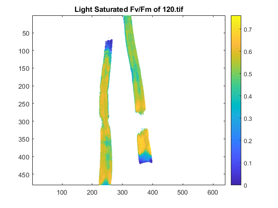
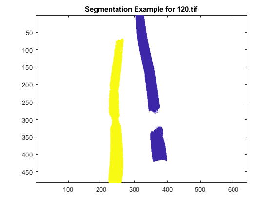
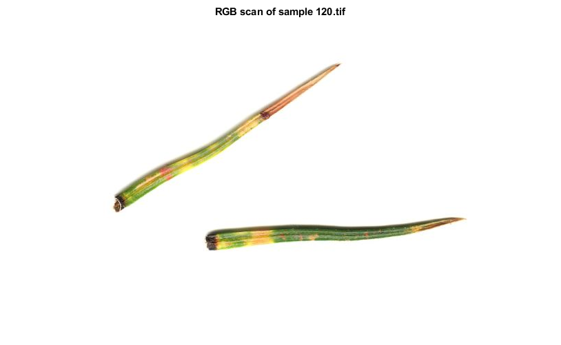

Example script: batch-processing light-saturated FvFm data
Gerald Page 5/28/2020 https://pageg.github.io
All functions, data and example scripts are available here: https://github.com/PageG/IM-PAM
This demonstration script process all images within a directory and calculates the mean and standard deviation of each image.
If you have multiple samples (i.e. pine needles) within each image, change second argument in the 'proc_single_PAM' function as required - see second example below.
If you want to to retain spatial data, see 'im_pam_tiff.m' or 'im_pam_tiff_fvfm.m' in the third example below.
Contents
Example 1: calculate mean and standard deviation of one sample per image
% Get a list of all files to process files = dir('./IM-PAM/Data/single_images/'); files = files(3:end); drs=['./IM-PAM/Data/single_images/']; % in current directory images = dir([drs '/*.tif']); images = {images.name}; % file names to cell images = sort_nat(images); % Sort images in numerical order. requires 'sort_nat' function in path % process single PAM images for light-saturated FvFm, calculating mean and % standard deviation. for k = 1:length(images) [all_means(k,:), all_sd(k,:)] = proc_single_PAM([drs images{k}], 1); % note second argument is the number of leaves within the image, set here = 1. end output = cell2table(images'); output(:,2) = table(all_means); output(:,3) = table(all_sd); output.Properties.VariableNames = {'File' 'FvFm_mean' 'FvFm_sd'} % clear images all_means all_sd drs files images k; % writetable(output,'PAM_FvFm_example.csv');
output =
4×3 table
File FvFm_mean FvFm_sd
__________ _________ ________
{'23.tif'} 0.70253 0.034196
{'24.tif'} 0.65912 0.025146
{'25.tif'} 0.70723 0.020259
{'26.tif'} 0.69477 0.021676
Example 2: Process images with more than one sample per image
% in this example, each PAM image contains two needles from the same plant files = dir('./IM-PAM/Data/damaged_needles/'); files = files(3:end); drs=['./IM-PAM/Data/damaged_needles/']; % in current directory images = dir([drs '/*.tif']); images = {images.name}; % file names to cell images = sort_nat(images); % Sort images in numerical order. requires 'sort_nat' function in path % process single PAM images for light-saturated FvFm, calculating mean and % standard deviation. for k = 1:length(images) [all_means2(k,:), all_sd2(k,:)] = proc_single_PAM([drs images{k}], 2); % 2 needles per image end output2 = cell2table(images'); output2(:,2) = table(all_means2); output2(:,3) = table(all_sd2); output2.Properties.VariableNames = {'File' 'FvFm_mean' 'FvFm_sd'} % writetable(output2,'PAM_FvFm_duplicates_example.csv');
output2 =
4×3 table
File FvFm_mean FvFm_sd
___________ __________________ ____________________
{'24.tif' } 0.39609 0.51615 0.063361 0.095653
{'29.tif' } 0.6517 0.63162 0.056161 0.057852
{'120.tif'} 0.47754 0.50886 0.12644 0.12342
{'127.tif'} 0.15271 0.37514 0.11989 0.094099
Example 3: retain spatial data and demonstrate 'seg_leaf' function
[FvFm] = im_pam_tiff_fvfm([drs images{3}],134);
% PLOTTING
[nr,nc] = size(FvFm(:,:,1));
% subplot(1, 2, 2)
pcolor([FvFm nan(nr,1); nan(1,nc+1)]);
shading flat;
set(gca, 'ydir', 'reverse');
colorbar;
title('Light Saturated Fv/Fm of 120.tif');
% colormap hsv % jet, hsv
% load segmented example figure
openfig('segmented_120.fig');
title('Segmentation Example for 120.tif');
  Compare to RGB image
im = imread('120_zoom.jpg'); imshow(im) title('RGB scan of sample 120.tif')